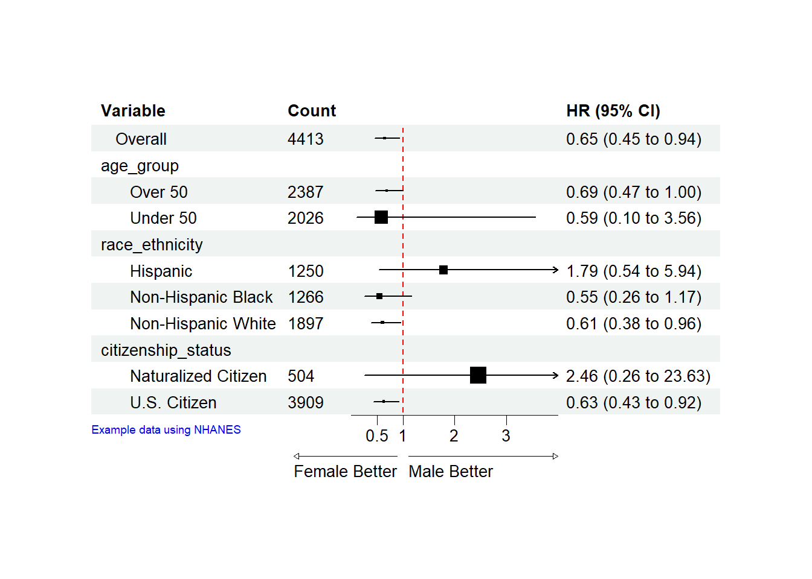

개요
이 문서에서는 Survey 모델에 대한 개요와 이를 jstable 패키지, forestploter package를 사용하여 필요한 모형들을 제작하는 방법을 알아보겠습니다
Survey model
Survey 모델은 표본조사 데이터를 분석할 떄 사용되는 모델입니다. 앞선 포스트에서 살펴보았던 일반적인 회귀 모델과는 다르게 복잡한 표본 설계를 반영하여 결과를 추정할 수 있게 도움을 줍니다. 표본 조사에서 데이터는 무작위로 추출된 것이 아닌 층화, 군집화, 가중치 등이 사용되었기 때문에 이를 반영하는 통계 분석이 필요합니다. 이러한 분석이 필요한 이유에 대해 국민건강영양조사를 에시로 들겠습니다.
Survey model의 특징
층화
국민건강영양조사의 경우 무작위로 표본을 추출하지 않고, 층화, 군집화, 가중치 등의 방법을 사용하여 표본을 추출합니다. 층화에 대해 먼저 알아보겠습니다. 인구 집단을 성별, 연령대, 지역 등으로 층화하여 각 층에서 독립적으로 표본을 추출합니다. 이렇게 하는 경우 특정 집단이 과소 또는 과대 대표되는 문제를 방지할 수 있습니다.
군집화
가구나 지역단위로 표본을 추출하는 군집화 방법또한 사용합니다. 군집화된 데이터는 같은 군집 내의 사람들 간에 상관성이 존재할 수 있기 때문에, 이를 반영할 수 있도록 데이터를 추출하여 사용합니다.
가중치
각 표본을 추출한 이후에는 그 표본이 전체 인구를 어느정도 반영하는지를 보는 가중치를 제공하여야합니다. 특정 연령대나 지역에서 표본이 과대 추출되는 경우 가중치를 낮추는 등의 방법으로 전체 인구를 보다 정확히 대변할 수 있습니다.
유한 모집단 보정
이는 국민건강영양조사와 같이 전체 인구집단과 표본의 차이가 큰 경우에는 크게 중요하지 않을 수도 있으나, 표본의 크기가 전체 모집단에 비해 클 때 모집단이 가지는 변동성을 조정할 필요하 있습니다. 따라서 이런 경우 Survey 모델에서는 보정이 필요합니다. FPC를 구하는 공식을 보시면 모집단이 커질 수록 변동성이 커진다는 것을 알 수 있습니다.
\[ FPC = \sqrt{\frac{N - n}{N - 1}} \]
Survey 모델을 가지고 모형 만들기
Survey 모델을 통한 선형회귀 분석
간단하게 국민건강영양조사에서 공개된 자료로 선형회귀 분석을 직접 진행해보겠습니다. 이 포스트에서 다루는 통계는 코드 실행과 통계학적 모형 설명을 위해 사용하는 것임으로, 엄격한 inclusion, exclusion criteria 과정 등을 적용하지 않아 결과는 현실과 상이할 수 있음을 미리 밝힙니다.
국민건강영양조사의 2012년 안검사 데이터를 사용해보겠습니다. 국민건강영양조사 사이트에서 데이터를 다운 받은 이후 haven, data.table 라이브러리를 사용하여 자료를 datatable로 바꾸겠습니다.
이후 교육, 성별, 나이에 따른 백내장 진단 여부를 알아보도록 하겠습니다. Survey 모델의 경우, 앞서 말씀드린 특징들로 인해 데이터를 사용하기 이전에 Survey design모델이 필요합니다.
분석을 위해 간단하게, 성별, 나이, 교육에서 결측치를 제거하였고 백내장 진단 여부에 대해서는 무응답과 같은 변수를 제거하고 진단 여부를 (1.예,2.아니오)만 사용하기로 하였고, 0,1을 가지는 이항변수로 만들기 위해 2.아니오는 0으로 코딩하는 과정을 거쳤습니다.
모델 디자인의 경우, svydesign이라는 함수를 사용하게 되는데, 표본조사를 제공하는 곳에서 보통 id, strata, weights에 사용할 수 있는 변수들에 대한 설명이 같이 첨부되어있습니다. 국민건강영양조사에서 제공하는 안대에 따라 psu, kstrata, wt_itvex변수를 코딩하였습니다. 앞서 말씀드린바와 같이 국민건강영양조사에서는 전체 인구가 표본에 비해 크기 때문에 fpc 변수가 필요하지 않지만, 모델에 따라 fpc변수를 svydesign에 추가할 수 있습니다. 백내장 진단여부를 이항변수로 코딩했기 때문에 앞선 포스트에서 살펴본 glm모델을 사용하여 데이터를 살펴보도록 하겠습니다. 이후 jstable 패키지를 이용해 glm모델을 살펴볼 수 있는 테이블을 만들어보겠습니다
ds<-svyglm(E_DH2_dg~age+as.factor(edu)+as.factor(sex), design=survey_hn12, family =quasibinomial())
svyregress.display(ds)$first.line
[1] "Logistic regression predicting E_DH2_dg- weighted data\n"
$table
crude OR.(95%CI) crude P value adj. OR.(95%CI)
age "1.15 (1.13,1.16)" "< 0.001" "1.15 (1.13,1.16)"
as.factor(edu): ref.=1 NA NA NA
as.factor(edu)2 "0.3 (0.22,0.41)" "< 0.001" "0.86 (0.58,1.3)"
as.factor(edu)3 "0.19 (0.14,0.27)" "< 0.001" "1 (0.68,1.46)"
as.factor(edu)4 "0.17 (0.11,0.24)" "< 0.001" "1.22 (0.78,1.91)"
as.factor(sex): 2 vs 1 "1.71 (1.39,2.1)" "< 0.001" "1.47 (1.12,1.93)"
adj. P value
age "< 0.001"
as.factor(edu): ref.=1 NA
as.factor(edu)2 "0.479"
as.factor(edu)3 "0.997"
as.factor(edu)4 "0.392"
as.factor(sex): 2 vs 1 "0.006"
$last.lines
[1] "No. of observations = 3891\n\n"
attr(,"class")
[1] "display" "list" 테이블의 결과를 살펴 보았을 때 나이는 통계적으로 유의미하게 백내장의 발생과 관련이 있고, 교육수준은 거의 없는 것으로 알 수 있습니다. 성별에 따른 차이도 p-value가 0.05보다는 크지만 0.06으로 통계적으로 유의미하지는 않지만 조금의 관련성이 있다는 것을 알 수 있습니다. 이번에는 strata별로 볼 수 있는 table을 만들어보도록 하겠습니다.
hn12_cat$E_DH2_dg<-as.numeric(hn12_cat$E_DH2_dg)
hn12_cat$age<-as.numeric(hn12_cat$age)
svyCreateTableOne2(strata = 'sex', vars = c('E_DH2_dg','age'), data = survey_hn12) level 1 2 p test
n "" "10311810.38" "11404537.11" "" ""
E_DH2_dg "" " 0.09 ± 0.29" " 0.15 ± 0.36" "<0.001" ""
age "" " 54.92 ± 10.74" " 56.64 ± 11.52" "<0.001" ""
sig
n NA
E_DH2_dg "**"
age "**"svyCreateTableOneJS(strata = 'sex', strata2 = 'edu', vars = c('E_DH2_dg','age'), data = survey_hn12)$table
level 1 2 3
n "" "2112878.74" "1499859.85" "3737738.11"
E_DH2_dg "" " 0.16 ± 0.37" " 0.10 ± 0.30" " 0.08 ± 0.27"
age "" " 63.35 ± 9.70" " 57.76 ± 9.59" " 52.83 ± 9.84"
4 p test sig 1
n "2961333.68" "" "" NA "4381837.88"
E_DH2_dg " 0.06 ± 0.23" "<0.001" "" "**" " 0.30 ± 0.46"
age " 50.09 ± 9.11" "<0.001" "" "**" " 66.23 ± 9.29"
2 3 4
n "1694071.75" "3575372.10" "1753255.37"
E_DH2_dg " 0.09 ± 0.28" " 0.05 ± 0.21" " 0.05 ± 0.21"
age " 55.89 ± 7.87" " 49.75 ± 7.83" " 47.47 ± 7.20"
p test sig
n "" "" NA
E_DH2_dg "<0.001" "" "**"
age "<0.001" "" "**"
$caption
[1] "Stratified by sex() & edu- weighted data"svyCreateTableOne2같은 경우에는 보다 단순한 데이터에서 하나의 층으로 테이블을 만들고 싶을 때 사용할 수 있으며, svyCreateTableOneJS의 경우에는 층화를 두 층 이상, 그리고 조금 더 다양한 옵션들이 가능합니다. 유사한 방식으로 진단여부와 같은 이항분포뿐만 아니라 안압과 같은 연속변수에도 적용이 가능합니다. 녹내장 환자를 에시로 하면 아래와 같이 할 수 있습니다.
hn12_glau<-hn12[!(E_Gr_p%in% c(NA, 888, 999))&!is.na(E_Gl_p)&!is.na(edu)&!is.na(sex)&!is.na(age)]
survey_hn12 <- svydesign(id = ~psu, strata = ~kstrata, weights = ~wt_itvex, data = hn12_glau)
ds2<-svyglm(E_Gr_p~age+as.factor(edu)+as.factor(sex), design=survey_hn12)
svyregress.display(ds2)$first.line
[1] "Linear regression predicting E_Gr_p- weighted data\n"
$table
crude coeff.(95%CI) crude P value
age "0.01 (0,0.01)" "0.142"
as.factor(edu): ref.=1 NA NA
as.factor(edu)2 "0.11 (-0.26,0.48)" "0.552"
as.factor(edu)3 "0.06 (-0.27,0.38)" "0.725"
as.factor(edu)4 "0 (-0.38,0.38)" "0.995"
as.factor(sex): 2 vs 1 "-0.32 (-0.52,-0.11)" "0.002"
adj. coeff.(95%CI) adj. P value
age "0.01 (0,0.02)" "0.059"
as.factor(edu): ref.=1 NA NA
as.factor(edu)2 "0.16 (-0.22,0.54)" "0.399"
as.factor(edu)3 "0.22 (-0.18,0.62)" "0.287"
as.factor(edu)4 "0.16 (-0.31,0.63)" "0.496"
as.factor(sex): 2 vs 1 "-0.31 (-0.51,-0.12)" "0.002"
$last.lines
[1] "No. of observations = 5339\nAIC value = 27920.3506\n\n"
attr(,"class")
[1] "display" "list" Survey 모델을 통한 생존 분석
이번에는 미국의 국민건강영양조사의 데이터를 가지고 생존분석을 진행해보도록 하겠습니다. 사이트에서 Mortality, 와 기본 조사 데이터를 다운 받은 이후, 이전과 유사한 방법으로 제공된 weight, id, strata를 통해 design모델을 만들어보겠습니다.
library(readr)
demo <- read_xpt("DEMO_J.XPT")
mortality <- read_fwf("NHANES_2017_2018_MORT_2019_PUBLIC.dat",
col_types = "iiiiiiii",
fwf_cols(SEQN = c(1,6),
ELIGSTAT = c(15,15),
MORTSTAT = c(16,16),
UCOD_LEADING = c(17,19),
DIABETES = c(20,20),
HYPERTEN = c(21,21),
PERMTH_INT = c(43,45),
PERMTH_EXM = c(46,48)),
na = c("", ".")
)
head(mortality)# A tibble: 6 × 8
SEQN ELIGSTAT MORTSTAT UCOD_LEADING DIABETES HYPERTEN PERMTH_INT PERMTH_EXM
<int> <int> <int> <int> <int> <int> <int> <int>
1 93703 2 NA NA NA NA NA NA
2 93704 2 NA NA NA NA NA NA
3 93705 1 0 NA NA NA 18 18
4 93706 1 0 NA NA NA 35 34
5 93707 2 NA NA NA NA NA NA
6 93708 1 0 NA NA NA 19 18mortality$PERMTH_EXM[mortality$PERMTH_EXM == "."] <- NA
mortality$PERMTH_EXM <- as.numeric(mortality$PERMTH_EXM)
mortality$MORTSTAT <- as.numeric(mortality$MORTSTAT)
merged_data <- merge(demo, mortality, by = "SEQN")
merged_data_clean <- merged_data[complete.cases(merged_data[, c("MORTSTAT", "PERMTH_EXM", "RIDAGEYR", "DMDEDUC2", "RIAGENDR",'INDFMIN2')]), ]
survey_nhanes <- svydesign(id = ~SDMVPSU, strata = ~SDMVSTRA, weights = ~WTMEC2YR, data = merged_data_clean, nest = TRUE)이번에는 생존 분석을 진행할 예정이기 때문에 사망여부인 변수 MORTSTAT과 관찰기관 변수인 PERMTH_EXM을 사용하여 survey cox모델을 만들어보겠습니다. 기존의 Cox모델과 함수 작성방법이 유사하며 svycoxph함수를 사용하여, 사망이벤트와 나이(RIDAGEYR), 교육(DMDEDUC2), 성별(RIAGENDR), 가정소득수준(IDFMIN2)의 관련성을 알아보겠습니다.
ds3 <- svycoxph(Surv(PERMTH_EXM, MORTSTAT) ~ RIDAGEYR + DMDEDUC2 + RIAGENDR+INDFMIN2, design = survey_nhanes)
svycox.display(ds3)Stratified 1 - level Cluster Sampling design (with replacement)
With (30) clusters.
svydesign(id = ~SDMVPSU, strata = ~SDMVSTRA, weights = ~WTMEC2YR,
data = merged_data_clean, nest = TRUE)
Stratified 1 - level Cluster Sampling design (with replacement)
With (30) clusters.
svydesign(id = ~SDMVPSU, strata = ~SDMVSTRA, weights = ~WTMEC2YR,
data = merged_data_clean, nest = TRUE)
Stratified 1 - level Cluster Sampling design (with replacement)
With (30) clusters.
svydesign(id = ~SDMVPSU, strata = ~SDMVSTRA, weights = ~WTMEC2YR,
data = merged_data_clean, nest = TRUE)
Stratified 1 - level Cluster Sampling design (with replacement)
With (30) clusters.
svydesign(id = ~SDMVPSU, strata = ~SDMVSTRA, weights = ~WTMEC2YR,
data = merged_data_clean, nest = TRUE)
Stratified 1 - level Cluster Sampling design (with replacement)
With (30) clusters.
svydesign(id = ~SDMVPSU, strata = ~SDMVSTRA, weights = ~WTMEC2YR,
data = merged_data_clean, nest = TRUE)$table
crude HR(95%CI) crude P value adj. HR(95%CI) adj. P value
RIDAGEYR "1.08 (1.06,1.1)" "< 0.001" "1.08 (1.06,1.1)" "< 0.001"
DMDEDUC2 "0.74 (0.6,0.9)" "0.003" "0.79 (0.67,0.93)" "0.005"
RIAGENDR "0.68 (0.38,1.19)" "0.172" "0.59 (0.35,1)" "0.05"
INDFMIN2 "0.98 (0.92,1.03)" "0.404" "0.98 (0.95,1.02)" "0.356"
$metric
[,1] [,2] [,3] [,4]
<NA> NA NA NA NA
No. of observations 4991.00 NA NA NA
No. of events 124.00 NA NA NA
AIC 1401.96 NA NA NA
$caption
[1] "Survey cox model on time ('PERMTH_EXM') to event ('MORTSTAT')"결과를 대략 살펴보면 조정 이후 나이와 성별 교육 수준이 모두 통게적으로 유의미하게 관련이 있다는 것을 확인할 수 있습니다. 이번에는 인종, 나이(50세 이상 이하), 미국 시민권(Naturalized여부) 등의 그룹에 대해 subgroup analysis를 진행해보도록 하겠습니다.
merged_data_mod<- merged_data %>%
mutate(gender = factor(RIAGENDR, labels = c("Male", "Female")),
MORTSTAT = as.numeric(MORTSTAT == 1),
age_group = ifelse(RIDAGEYR >= 50, "Over 50", "Under 50"),
race_ethnicity = factor(case_when(
RIDRETH1 == 1 | RIDRETH1 == 2 ~ "Hispanic",
RIDRETH1 == 3 ~ "Non-Hispanic White",
RIDRETH1 == 4 ~ "Non-Hispanic Black")),
citizenship_status = factor(case_when(
DMDCITZN == 1 ~ "U.S. Citizen",
DMDCITZN == 2 ~ "Naturalized Citizen"
)),
)
merged_data_mod<-merged_data_mod[complete.cases(merged_data_mod[, c("MORTSTAT", "PERMTH_EXM", "RIDAGEYR", "RIAGENDR","RIDRETH1", "DMDCITZN","age_group", "race_ethnicity", "citizenship_status")]), ]
TableSubgroupMultiCox(Surv(PERMTH_EXM, MORTSTAT) ~ gender, var_subgroups = c("age_group", "race_ethnicity", "citizenship_status"), data = merged_data_mod, time_eventrate = 365 , line = FALSE) Variable Count Percent Point Estimate Lower Upper
gender Overall 4413 100 0.65 0.45 0.94
1 age_group <NA> <NA> <NA> <NA> <NA>
2 Over 50 2387 54.1 0.69 0.47 1
3 Under 50 2026 45.9 0.59 0.1 3.56
4 race_ethnicity <NA> <NA> <NA> <NA> <NA>
5 Hispanic 1250 28.3 1.79 0.54 5.94
6 Non-Hispanic Black 1266 28.7 0.55 0.26 1.17
7 Non-Hispanic White 1897 43 0.61 0.38 0.96
8 citizenship_status <NA> <NA> <NA> <NA> <NA>
9 Naturalized Citizen 504 11.4 2.46 0.26 23.63
10 U.S. Citizen 3909 88.6 0.63 0.43 0.92
gender=Male gender=Female P value P for interaction
gender 4.8 2.7 0.022 <NA>
1 <NA> <NA> <NA> 0.869
2 8.5 4.9 0.05 <NA>
3 0.5 0.3 0.569 <NA>
4 <NA> <NA> <NA> 0.202
5 0.7 1.3 0.342 <NA>
6 4.1 2.3 0.122 <NA>
7 8.2 4 0.035 <NA>
8 <NA> <NA> <NA> 0.232
9 0.4 1.2 0.436 <NA>
10 5.5 2.9 0.016 <NA>TableSubgroupMultiGLM(MORTSTAT ~ gender,var_subgroups = c("age_group", "race_ethnicity", "citizenship_status"), data = merged_data_mod, family = "binomial") Variable Count Percent OR Lower Upper P value
genderFemale Overall 4413 100 0.64 0.44 0.93 0.02
1 age_group <NA> <NA> <NA> <NA> <NA> <NA>
2 Over 50 2387 54.1 0.67 0.46 0.99 0.043
3 Under 50 2026 45.9 0.58 0.1 3.5 0.557
4 race_ethnicity <NA> <NA> <NA> <NA> <NA> <NA>
5 Hispanic 1250 28.3 1.8 0.54 6 0.34
6 Non-Hispanic Black 1266 28.7 0.54 0.25 1.16 0.114
7 Non-Hispanic White 1897 43 0.59 0.37 0.95 0.03
8 citizenship_status <NA> <NA> <NA> <NA> <NA> <NA>
9 Naturalized Citizen 504 11.4 2.49 0.26 24.15 0.43
10 U.S. Citizen 3909 88.6 0.62 0.42 0.91 0.014
P for interaction
genderFemale <NA>
1 0.881
2 <NA>
3 <NA>
4 0.192
5 <NA>
6 <NA>
7 <NA>
8 0.235
9 <NA>
10 <NA>이번에는 TableSubgroupMultiCox 함수를 사용하면, 원하는 테이블을 얻을 수 있다는 것을 알 수 있습니다. Subgroup별로 남성과 여성의 사망률의 차이를 직관적이게 table로 확인할 수 있습니다. Subgroup analysis의 경우 하지만, forestplot도 필요한 경우들이 많기 때문에 forestploter 패키지를 이용하여 만들어보도록 하겠습니다.
Forestploter를 이용한 forestplot만들기
우선, 필요한 경우 forestploter를 R에서 설치합니다(Link Text에서 더 상세한 사용법에 대해서 알 수 있습니다) 이후 TableSubgroupMultiCox 함수를 이용하여 데이터를 불러온 이후, 변수명을 제외한 나머지 행들을 numeric으로 바꿔줍니다.
library(grid)
library(forestploter)
df<- TableSubgroupMultiCox(Surv(PERMTH_EXM, MORTSTAT) ~ gender, var_subgroups = c("age_group", "race_ethnicity", "citizenship_status"), data = merged_data_mod, line = FALSE)
df<-data.table(df)
num_cols<- names(df)[-c(1)]
df[, (num_cols) := lapply(.SD, as.numeric), .SDcols = num_cols]이후 가독성을 위해 subgroup 변수들은 띄어쓰기를 진행하고, NA 값들은 빈칸으로 바꾸어줍니다. 또한 표준 오차값을 변수를 통해 지정하여 주고, plot의 line을 그리기 위한 공간을 테이블에 확보해줍니다. HR값 또한 변수내에서 계산을 통해 행을 추가합니다. 이후 원하는 테마를 지정한 이후, 위와 같이 코드를 실행한다면 forest plot을 얻을 수 있습니다.
df$Variable <- ifelse(is.na(df$Count),
df$Variable,
paste0(" ", df$Variable))
df$Count <- ifelse(is.na(df$Count), "", df$Count)
df$se <- (log(df$Upper) - log(df$'Point Estimate'))/1.96
df$` ` <- paste(rep(" ", 20), collapse = " ")
df$`HR (95% CI)` <- ifelse(is.na(df$se), "",
sprintf("%.2f (%.2f to %.2f)",
df$'Point Estimate', df$Lower, df$Upper))
tm <- forest_theme(base_size = 10,
refline_col = "red",
arrow_type = "closed",
footnote_gp = gpar(col = "blue", cex = 0.6))refline_col will be deprecated, use refline_gp instead.p <- forest(df[,c(1:2, 12:13)],
est = df$'Point Estimate',
lower = df$Lower,
upper = df$Upper,
sizes = df$se,
ci_column = 3,
ref_line = 1,
arrow_lab = c("Female Better", "Male Better"),
xlim = c(0, 4),
ticks_at = c(0.5, 1, 2, 3),
footnote = "Example data using NHANES",
theme = tm)
plot(p)
Reuse
Citation
@online{jo2024,
author = {Jo, Hyungwoo},
title = {Survey Design {모델에서의} {통계}},
date = {2024-10-08},
url = {https://blog.zarathu.com/posts/2024-10-08 Survey/},
langid = {en}
}